Effortlessly manage soft delete functionality for Odoo models.
The Soft Delete Manager module allows Odoo administrators to enable soft delete functionality for selected models. Instead of permanently deleting records, they are marked as deleted, allowing recovery or permanent deletion via a wizard. This module is ideal for preventing accidental data loss and maintaining robust data retention policies.
Click the "Recover Deleted" button in the tree view to access and manage soft-deleted records.
Locate the model name in the Odoo interface to configure soft delete settings.
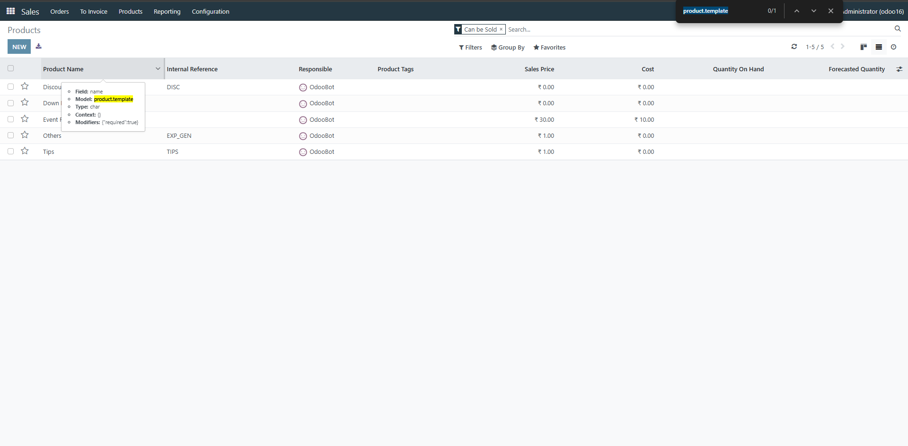Copy the model name and paste it into the Soft Delete Manager settings to enable soft delete.
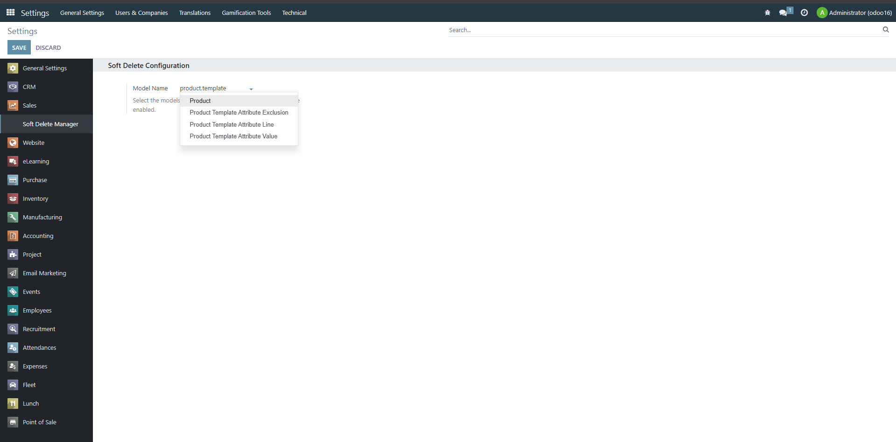Normal users cannot access the soft delete functionality, ensuring secure operations.
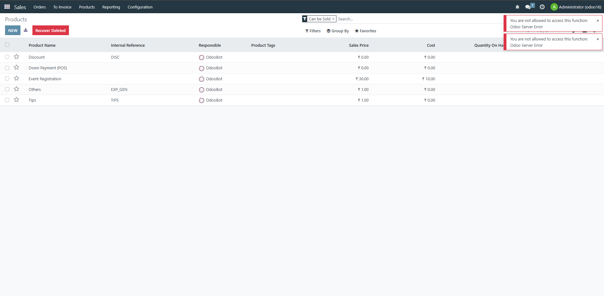Administrators can switch to superuser mode to access advanced soft delete features.
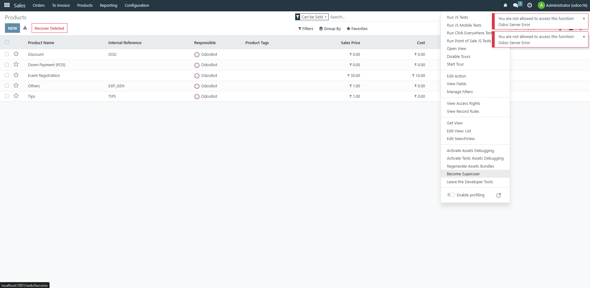View soft-deleted records in a dedicated tree view for easy management.
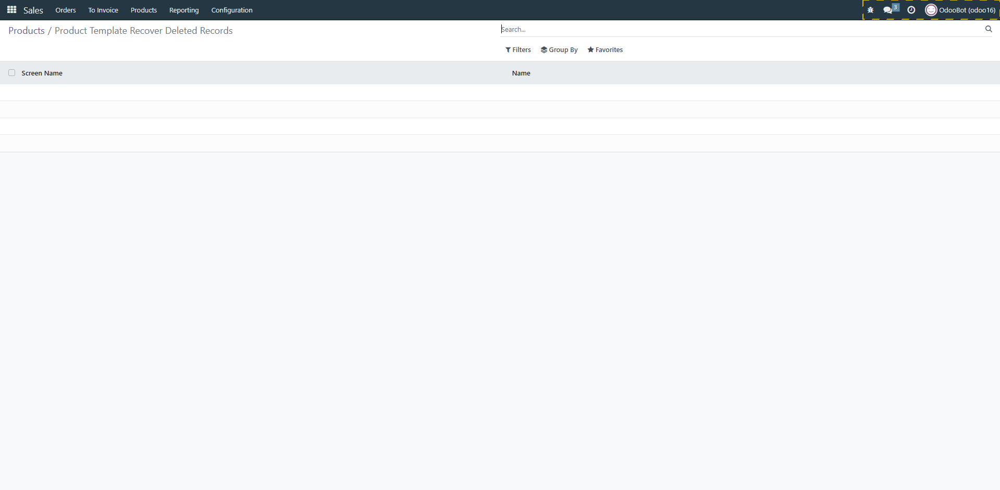Soft delete a record, marking it as deleted without removing it permanently.
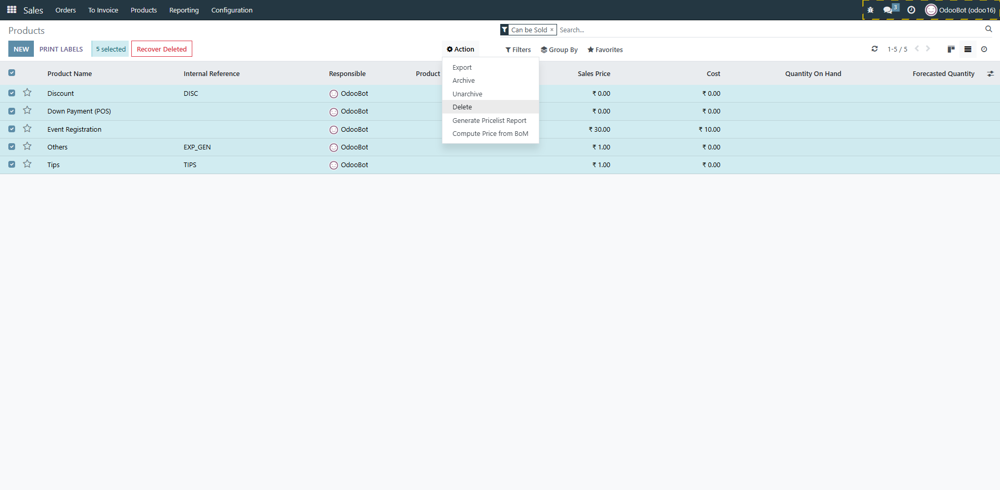Soft-deleted records are displayed in a dedicated tree view for review.
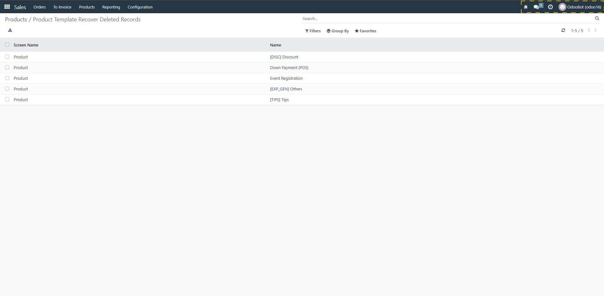Access buttons to restore or permanently delete soft-deleted records in the wizard.
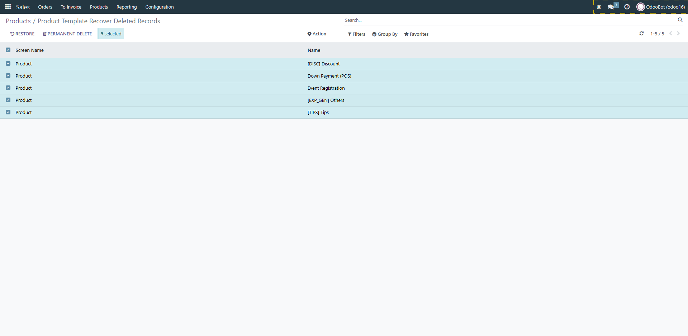Use the restore button to recover soft-deleted records back to their original state.
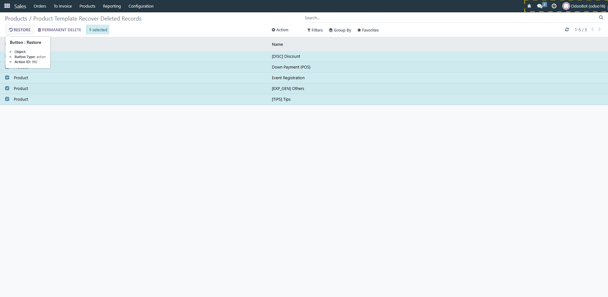Restored records reappear in the main screen, fully recovered.
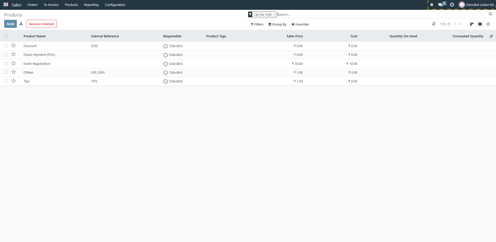Permanently delete soft-deleted records using the dedicated button.
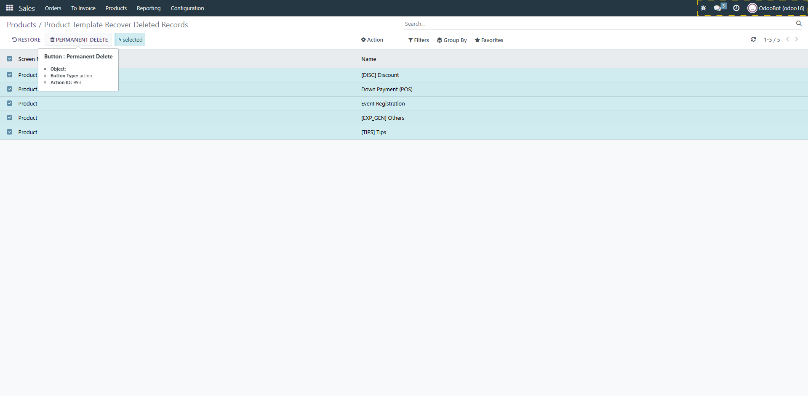For questions or assistance, please reach out to the author.
Odoo Proprietary License v1.0
This software and associated files (the "Software") may only be used (executed,
modified, executed after modifications) if you have purchased a valid license
from the authors, typically via Odoo Apps, or if you have received a written
agreement from the authors of the Software (see the COPYRIGHT file).
You may develop Odoo modules that use the Software as a library (typically
by depending on it, importing it and using its resources), but without copying
any source code or material from the Software. You may distribute those
modules under the license of your choice, provided that this license is
compatible with the terms of the Odoo Proprietary License (For example:
LGPL, MIT, or proprietary licenses similar to this one).
It is forbidden to publish, distribute, sublicense, or sell copies of the Software
or modified copies of the Software.
The above copyright notice and this permission notice must be included in all
copies or substantial portions of the Software.
THE SOFTWARE IS PROVIDED "AS IS", WITHOUT WARRANTY OF ANY KIND, EXPRESS OR
IMPLIED, INCLUDING BUT NOT LIMITED TO THE WARRANTIES OF MERCHANTABILITY,
FITNESS FOR A PARTICULAR PURPOSE AND NONINFRINGEMENT.
IN NO EVENT SHALL THE AUTHORS OR COPYRIGHT HOLDERS BE LIABLE FOR ANY CLAIM,
DAMAGES OR OTHER LIABILITY, WHETHER IN AN ACTION OF CONTRACT, TORT OR OTHERWISE,
ARISING FROM, OUT OF OR IN CONNECTION WITH THE SOFTWARE OR THE USE OR OTHER
DEALINGS IN THE SOFTWARE.